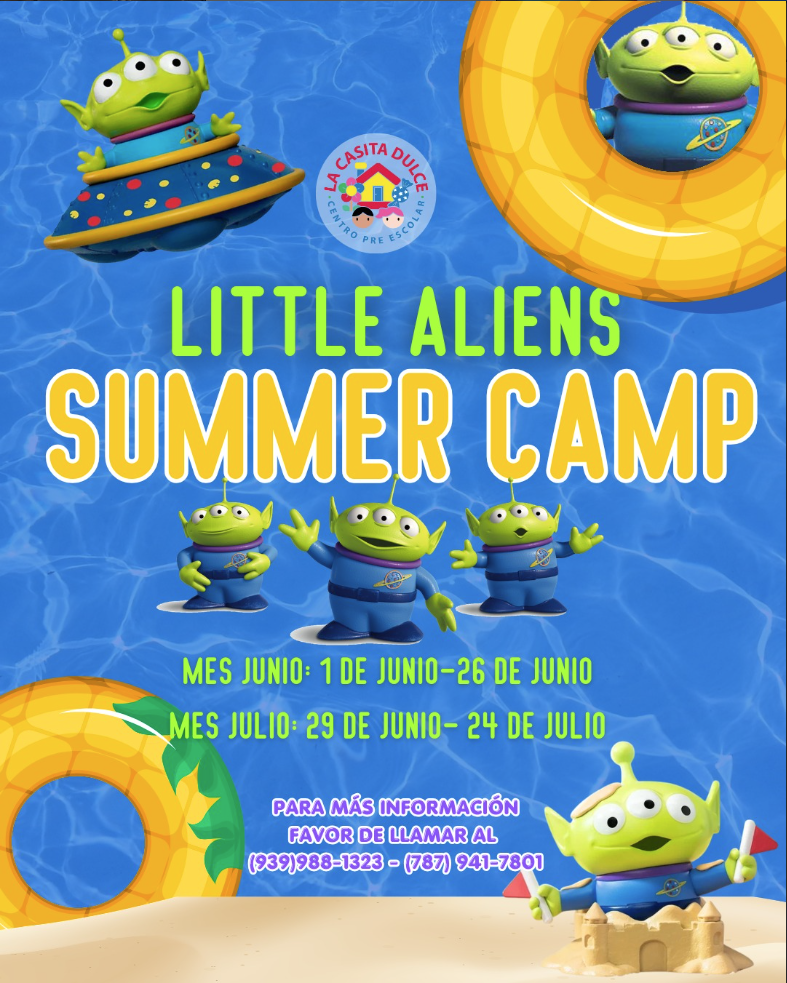

Preescolar en Bayamón y Naranjito · Más de 30 años educando con amor
Cuido educativo de calidad en Bayamón y Naranjito para la niñez temprana en un ambiente familiar
Donde con dulzura se aprende
Más de 30 años acompañando a familias en Puerto Rico con amor, estructura y dedicación.
Programa para niños desde 6 meses hasta 6 años, con cuido extendido disponible.

Campamento de verano
Little Aliens Summer Camp en Puerto Rico
Campamento de verano para niños en Bayamón y Naranjito lleno de aprendizaje, juegos y experiencias inolvidables.
Este verano llega nuestro Little Aliens Summer Camp, un campamento diseñado para que los niños aprendan, jueguen y desarrollen nuevas habilidades en un ambiente seguro y divertido.
Actividades creativas, juegos sensoriales y dinámicas adaptadas a cada edad.
La Casita Dulce nació de una convicción simple: que los primeros años de vida merecen el mejor cuidado. Hace más de 30 años echamos raíces en Puerto Rico con esa promesa, y hoy seguimos honrándola cada día.
Raíces de más de 30 años
Comenzamos con una misión clara y seguimos guiándonos por ella: crear un espacio donde los niños se sientan seguros, amados y listos para aprender.
Cada niño es único
Como flores, todos crecen a su tiempo y a su manera. Por eso nuestro programa se adapta a cada edad, cada personalidad y cada familia.
Un compromiso que se siente
La confianza que depositan los padres en nosotros es sagrada. Nos mantenemos cerca, comunicados y comprometidos desde el primer día.
¿Por qué La Casita Dulce?
Con más de 30 años de experiencia, sabemos que los padres buscan algo más que un cuido: buscan confianza, estructura y amor genuino. Eso es lo que encontrarás aquí.
Ambiente seguro y supervisado
Contamos con cámaras de seguridad, sistema de intercomunicación, alarma y una planta física diseñada para niños. Nuestras maestras supervisan a los niños en todo momento y aplicamos todos los protocolos de manejo de emergencias.
Rutina diaria estructurada
Los niños crecen mejor con horarios predecibles. Combinamos juego activo, aprendizaje y descanso en una rutina que les da seguridad y confianza.
Equipo multidisciplinario
Contamos con psicólogos infantiles y trabajadores sociales para apoyar el bienestar emocional y el desarrollo integral de cada niño.
Comunicación con las familias
Siempre accesibles a través de nuestra plataforma digital y WhatsApp. Fomentamos una relación cercana con talleres y actividades en familia, creando un entorno de confianza y apoyo en el proceso educativo de cada hijo.
Desarrollo integral temprano
Nos especializamos en identificar y estimular todas las áreas del desarrollo — cognitiva, emocional, social y motora — desde la primera infancia, cuando el impacto es mayor.
Salón sensorial
Contamos con un espacio sensorial diseñado para estimular los sentidos, regular emociones y apoyar a niños con necesidades de integración sensorial.
Programa por edades
Horario regular 7:00am – 2:00pm · Cuido extendido opcional hasta 5:00pm
Cada grupo tiene su propio enfoque, pensado para acompañar el desarrollo natural de tu hijo.
6 meses – 2 años
Bebés y caminadores
Un espacio calmado y lleno de amor para los más pequeños. Rutinas de sueño, alimentación, estimulación sensorial y atención personalizada uno a uno.
3 - 4 años
Pre-Pre
Un momento crucial para el lenguaje y la socialización. Fomentamos la creatividad, la motricidad y los primeros vínculos de amistad.
4–5 años
Pre-kinder
La puerta de entrada al mundo académico. Letras, números y actividades diseñadas para que la escuela sea el siguiente paso natural.
5–6 años
Kinder
Los acompañamos hasta el final. Refuerzo académico, hábitos de estudio y el apoyo emocional para una transición escolar segura y confiada.
Más allá del salón
Actividades extracurriculares
Complementamos el desarrollo integral de cada niño con experiencias que van más allá del currículo — divertidas, enriquecedoras y diseñadas para que brillen.
Ballet
Clases de ballet que desarrollan coordinación, disciplina, expresión corporal y confianza en sí mismos desde temprana edad.
Eventos temáticos
Celebraciones y actividades especiales a lo largo del año que crean memorias, refuerzan el aprendizaje y fortalecen el sentido de comunidad.
Talleres de aprendizaje
Talleres creativos y prácticos que refuerzan destrezas académicas de forma dinámica y divertida, complementando el desarrollo integral de cada niño.
Nuestras ubicaciones
Estamos donde las familias nos necesitan. Dos centros con el mismo compromiso, la misma calidez y las mismas ganas de recibir a tu hijo.
Cada momento aquí es una historia de aprendizaje, amistad y alegría. Esto es lo que verás cuando visites nuestros centros.
Da el primer paso — agenda tu tour hoy
El tour es gratis, sin compromiso y a tu ritmo. Visita nuestro centro, conoce al equipo y siente la diferencia. Los cupos son limitados — te esperamos.